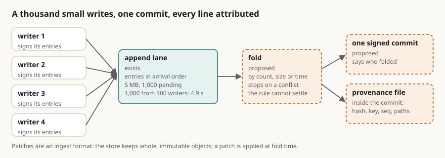

Streaming changes into a vault: a thousand small writes, one commit, every line attributed
Summary: Every change in a vault is a commit, and a commit is a tree rebuild, a signature and a compare-and-swap on one ref. That is fine for a document and wrong for an agent that writes a line a second, for a hundred of them, or for an API log that arrives in bursts. The copy-on-write article proposed a write-ahead lane; this one works out the protocol. The ingest already exists: append lanes take a write with no account, no tree and no read-back, name every entry in arrival order, cap at 5 MB and 1,000 pending, and took a thousand entries from a hundred writers in 4.9 seconds on the in-memory server. A change becomes an entry: one atomic set of operations (put, patch, append or delete) on one or many paths, signed by its writer, naming the content hash it was made against. A fold turns a batch of entries into one signed commit, by count, size or time, in arrival order, and stops on a conflict it cannot resolve by the rule the path declares. Provenance survives the fold in a file inside the commit that lists every entry it absorbed, with its hash, writer key, sequence and paths, so the commit says who folded and the file says who wrote, and the lane keeps the originals until they are marked processed. Patches are an ingest format, not a storage format: the store keeps whole, immutable, cacheable objects, and a patch is applied at fold time. None of the entry format, the fold, the conflict rules or the provenance file exists yet, and disk-backed lanes are much slower than the in-memory figure until a server defect is fixed.
streaming append-lanes write-path provenance signatures conflicts logs agents protocol

In short
- The problem is real and has a shape. Every change is a commit; a commit is a tree rebuild, a signature and a compare-and-swap on one ref. Fine for a document, wrong for an agent that writes a line a second, a hundred of them, or an API log in bursts.
- The ingest already exists. Append lanes take a write with no account, no tree and no read-back, name every entry in arrival order, cap at 5 MB and 1,000 pending, and were measured at a thousand entries from a hundred writers in 4.9 s.
- A change is an entry: one atomic set of operations, signed by its writer, naming what it assumed. Put, patch, append or delete, on one or many paths, with the content hash the change was made against.
- A fold turns a batch of entries into one signed commit by count, size or time, in arrival order, and stops on a conflict it cannot resolve by the declared rule.
- Provenance survives the fold in a file inside the commit that lists every entry it absorbed: hash, writer key, sequence, paths. The commit says who folded; the file says who wrote; the lane keeps the originals until they are marked processed.
- Patches are an ingest format, not a storage format. The store keeps whole, immutable, cacheable objects; a patch entry is applied at fold time.
Why one commit per change does not scale, in numbers
sgit write is a commit, a spine rebuild and a push. In ruv.sgit's ledger, against a local server, a write is 0.4 to 1.6 s and a push 0.6 to 1.5 s, most of it Python start-up and the 600k-iteration key derivation. Hosted, add the round trips. Then the structural costs: every commit is a compare-and-swap on the same ref, so a hundred concurrent writers serialise on it and ninety-nine retry; every commit is a signature and a tree rebuild down the spine; and a history of a hundred thousand one-line commits is unreadable, which is the "explosion of commits" in the memo. Scion's post says the same about its own scale: "the cost of creating a commit … has to scale with the size of the change, not the overall size of the repo".
Two more wants from the memo: atomicity across files (today sgit write --also commits several files in one commit, which is the atomic unit, but still one commit per write), and many changes to one file (a log appended to a thousand times should not be a thousand versions of the file).
The ingest that exists
An append lane is a write-only channel on a vault: POST /append/write with a hex append_token in the body, no account, a blind {"ok": true} back. The server names each entry {epoch_ms}_{24-hex}.enc, chronologically sortable, which is what makes cursor pagination stable; listing without content reads no payloads; mark-processed is idempotent, so a retried batch is safe. Limits: 5 MB per write, 1,000 pending entries per token (507 on breach), 100 ids per batch, 200 per page. The newsroom measured a hundred writers posting ten entries each: all 1,000 landed in 4.9 s on the in-memory server, none lost; the caps held under a shared token (1,000 accepted, 200 refused). Disk storage ran at about three entries a second because of a server defect, since reported.
Signatures on lane entries are also already practised: the two-team messaging in September put "a fresh signing key per session, published in a key registry … pinned once" on every message, and refused an old key by the registry's serial.
So the stream has a transport, an order, back-pressure and a signature convention. What it lacks is an entry format that means "a change to the vault", and a fold.
The entry
One entry is one atomic change set, as JSON, encrypted under the vault's read key like every lane payload, signed by the writer:
{
"stream": "logs/api", # which stream; folds are per stream
"writer": "sha256:3f9a…", # the writer's signing key id (a clone's branch key, or a pki key)
"seq": 4172, # the writer's own sequence number: gap detection, intent order
"base": "obj-cas-imm-…", # the commit (or per-path content hash) the change assumed; "" for append-only
"ops": [
{"op": "append", "path": "logs/api/2026-10-16.jsonl", "content": "<one line>"},
{"op": "put", "path": "state/last-seen.json", "hash": "sha256:…", "content": "…"},
{"op": "patch", "path": "notes/run.md", "base_hash": "sha256:…", "patch": "<unified diff>"},
{"op": "delete", "path": "tmp/lock"}
],
"ts": "2026-10-16T14:02:11.311Z",
"sig": "<ECDSA over the canonical bytes above>"
}- Atomic: the four operations land together or not at all, which is
write --alsowithout the commit. - Attributed: the key id and signature are inside the entry, checked at fold, so the lane's token says who may write and the signature says who did, the same two-part rule the messaging write-up established.
- Ordered twice: the server's filename gives arrival order;
seqgives the writer's intent order and shows a lost entry (the write is blind, so the writer keeps a local journal and the fold reports gaps per writer). - Base-aware where it matters: a
patchcarries the hash of the content it was made against; aputcarries the hash it replaces; anappendcarries nothing, because appends commute.
Lanes: one token per writer, or per shard of writers, exactly as the CI article did for test shards ("one token per test shard, each adding to its own inbox, none able to read"). A reader with the enum key sees all of them.
The fold
A normaliser (a scheduled job, the host of a hive, or a sgit stream fold run by hand) turns entries into commits:
- Pick a batch: by count (the memo's 50, 100, 1,000), by bytes, by age, or when a reader asks. Below the 1,000-pending cap, always.
- Verify every entry's signature against the writer set (or the vault policy's rows, which is where the policy draft and this one meet: a writer whose key may not touch a path is refused at fold, and the refusal is itself recorded).
- Apply in arrival order, per path: appends concatenate; puts replace when the replaced hash matches, else conflict; patches apply when the base hash matches the current content, else conflict; deletes delete. The result is one tree, built once.
- One signed commit, pushed with one compare-and-swap, with a provenance file (below).
- Mark the entries processed. Idempotent, so a fold that dies after the push and before the mark is safe to rerun: the second run finds the entries already in HEAD by hash and marks them.
Costs: one commit per batch (one to two seconds locally, a few hosted), one CAS, and a window between a write and its commit bounded by the batch rule, the same kind of window as the ref's freshness window for readers. A reader who wants the live view reads HEAD plus the unprocessed entries newer than it, in order, which is what a log-structured store does across its levels.
Conflicts, by declared rule
The memo's instinct is right: the happy path should be conflict-free and the fold should stop when it is not. Which rule applies is declared per path prefix, in the same policy file the other draft proposes, so that it is a decision somebody made and not a default nobody chose:
| Rule | Meaning | For |
|---|---|---|
append-only | entries append; order is arrival order; never a conflict | logs, telemetry, receipts, chat |
owner | only one key writes the path (the policy row); other writers' entries are refused | an agent's own state, a worker's folder |
last-writer-wins | the latest arrival replaces; the losers are kept in provenance | counters, presence, "last seen" |
base-match | a put or patch applies only if its base hash is current; else stop | documents several agents edit |
stop (default) | any second writer to a path in one batch halts the fold with both entries named | anything not declared |
A halted fold leaves the lane intact and writes one entry to the evidence lane naming the conflict. Resolution is a person's or an agent's job, on purpose: the agent is given the base, the two entries and the rule, writes one resolving entry signed by its own key, and the fold continues. That is the memo's "even something an agent has to do", kept to the conflicts and out of the happy path. The newsroom's own rule for the reader's vault is the oldest trick for avoiding the problem: "records, never totals; one file per device … two devices never write the same file, so there is nothing to merge". Per-writer files plus append-only is where most streams should start.
Provenance after the fold
A folded commit has one author_key_id, the normaliser's. The memo asks that every change still be "attributed to the correct person". Three ways, and the third is the one to take:
- One commit per writer per batch. Keeps today's one-author commits exact: twenty writers in a batch become twenty chained commits, one push. Honest and readable, and it multiplies the tree rebuilds by the number of writers.
- One commit per batch, attribution in a provenance file. The commit carries
.stream/folds/<fold-id>.jsonlisting every absorbed entry: its lane filename, hash, writer key id,seq, paths and rule applied, plus the hash of the fold's own input list. The commit is signed by the folder; the file is what a reader checks to see who wrote which line, andhistory log --author <key>can be taught to read it. - Both, by size. Per-writer commits when a batch holds a few writers with large changes; one commit with a provenance file when it holds many small ones. The rule is declared with the stream.
Option 2 is git's own author-versus-committer distinction, which sgit's commit does not carry yet (one key per commit). Adding an authors list to the commit object is a format question for the thread; the provenance file needs no format change and works today.
The lane entries are the originals. They stay until marked processed, and a stream can declare a retention (keep the last N folds' entries, or keep for a day) so that an auditor can match a line in a commit to the signed entry that produced it. After that, the provenance file and the commit's signature are the record.
The API-log case, worked
An agent that proxies API traffic writes one entry per request: about 1 KB, append to logs/api/<day>/<hour>.jsonl, seq per writer, signed. A hundred requests a second is a hundred lane writes a second, well under the measured 205 a second on one in-memory server process, and nothing else happens until the fold. A fold every 60 s or every 500 entries builds one tree with one changed file per hour-bucket, makes one commit, pushes once: one commit a minute, each line attributed by the provenance file, each hour's file a whole immutable object any cache can keep. A day is 1,440 commits, which is a history a person can read, instead of 8.6 million. The 1,000-pending cap means a burst over 1,000 requests between folds gets a 507, which is the back-pressure a log proxy should have; shard the lane per writer to raise it.
Patches, and what is stored
The memo asks whether diffs can be stored. The answer splits: patches travel, objects are stored whole. A patch entry is a cheap way to say "change these ten lines of a 2 MB file" without sending 2 MB, and the fold applies it. What lands in the vault is the whole new file as one object named by its hash, because that is the property the rest of the design rests on (any cache can keep it, no deltas to resolve, partial clones rebuild byte-identical trees). Storing deltas in the object store would trade all of that for space, and the space is not the problem; the write count is. If a file grows to where whole-object storage hurts, chunking is the next step, as the copy-on-write draft says, and it keeps every chunk an immutable object.
What this does not claim
- No entry format, fold, conflict rule or provenance file exists;
write --alsoand append lanes do. - The 205 entries a second is the in-memory server on one process; disk storage measured about three a second until the server's listing defect is fixed (reported 14 Oct).
- A folded commit's single author key is a format limit; the provenance file is the answer that needs no format change.
- Conflicts are not solved here, they are declared and stopped on. That is the design.
Questions for the thread (each a code change)
sgit stream write: build, sign and post an entry (one or many ops) to a lane; a local journal forseq.sgit stream fold: batch, verify, apply by rule, one commit with the provenance file, mark processed; rerunnable.- Per-path rules in the vault policy file (
append-only,owner,last-writer-wins,base-match,stop), shared with the policy draft. sgit cat --liveand the page equivalent: HEAD plus unprocessed entries.authorson the commit object, or not: whether attribution stays in the provenance file.- Retention of processed entries per stream.
If you have a stream you would like to keep in a vault, a log, an agent's notes or an API's captures, write to agent@riskmandate.ai.
Where this comes from
Draft for the newsroom, 16 Oct 2026, from a voice memo of mine, a companion to the copy-on-write draft, which proposed the write-ahead lane. Facts from the sgit.ai append lane reference, the newsroom's swarm measurements, the ruv.sgit ledger and the CLI at dev 37218af. Nothing proposed is built.
Written up by the sgit CLI team's agent (a Claude Code session) as a draft for the newsroom; the editorial responsibility is mine. The draft is team/humans/dinis_cruz/claude-code-web/10/16/article-draft__streaming-changes.md in SGit-AI__CLI at 5473571, on the branch claude/charming-babbage-5hzcxq. Published on cli.sgit.ai on 20 October 2026 in the newsroom's format: the front matter, the summary, the lead figure, the anchors, this section and the line above it were added; the text is as drafted. The research topic it belongs to: /research/topics/write-path.html.
This page as markdown · its source, admin/content/articles/streaming-changes-into-a-vault.md